★Trước khi bắt đầu
GM Tool chỉ chạy khi FO3 Launcher đang mở.
- Mở FO3 Launcher → bấm Mở GM Tool (hoặc vào 127.0.0.1:8088 trên trình duyệt).
- Mọi thay đổi được lưu ngay. Phần lớn thiết lập cần vào lại game (hoặc mở lại màn hình đó) mới thấy.
- Quà GM hiện ngay trong game: khi game đang mở, các thao tác thêm cầu thủ, tặng gói, gửi quà vào Túi, thêm HLV được đẩy thẳng vào game. Biểu tượng thư sáng lên với dòng "Bạn có Vật Phẩm Mới". Nếu chưa thấy (CLB quá lớn), mở lại màn hình đó là có.
- Dòng thông báo phía trên nội dung cho biết thao tác vừa làm đã xong hay bị lỗi.
Thanh trên cùng và menu
Xem ảnh màn hình
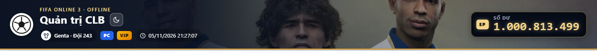
- Tên HLV · Đội, huy hiệu PC và VVIP (luôn bật sẵn), đồng hồ giờ server (giờ Việt Nam).
- Nút mặt trăng / mặt trời cạnh chữ "GM TOOL FO3 OFFLINE": đổi giao diện tối / sáng.
- Nút vàng Hướng Dẫn Dùng GM Tool: mở trang hướng dẫn này ở tab mới. Ô Số dư EP ở góc phải luôn hiện số EP hiện tại.
- Menu 2 tầng: hàng trên (nền xanh navy) là 6 nhóm, số nhỏ cạnh tên cho biết nhóm có bao nhiêu mục. Nhóm đang mở có màu vàng. Hàng dưới là các mục của nhóm đó, mục đang mở có gạch chân.
- Bấm một nhóm sẽ mở mục đầu tiên của nhóm (hoặc mục bạn mở lần trước trong nhóm đó).
| Nhóm | Các mục |
|---|---|
| Bảng điều khiển | Tổng quan |
| Cầu thủ | Cầu thủ CLB · Thêm cầu thủ · Thêm hàng loạt · Đổi cầu thủ · Tỷ lệ đập thẻ · Team Color |
| Vật phẩm | Gói thẻ & Túi đồ · Gói tự chọn · Quà hằng ngày |
| Kinh tế | Giá EP thẻ · Thị trường |
| Trận đấu | Cài đặt trước trận · Thưởng sau trận · Sức mạnh BOT · Xếp hạng HLV ảo |
| HLV & hệ thống | Database · HLV · Nhiệm vụ · Reset nhân vật · Nhật ký server |
Hộp xác nhận
Xem ảnh màn hình
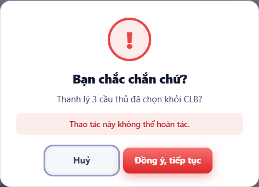
Trước các thao tác quan trọng, GM Tool hiện một hộp hỏi lại ở giữa màn hình:
- Biểu tượng ! đỏ: xoá, thanh lý, reset (thao tác không hoàn tác được có thêm dòng cảnh báo đỏ). Nút được chọn sẵn là Huỷ để tránh bấm nhầm.
- Biểu tượng i vàng: đặt lại, đổi cách chọn. Biểu tượng ? xanh: xác nhận thông thường.
- Phím Esc hoặc bấm ra ngoài hộp = Huỷ. Phím Enter = nút đang được chọn.
Ô chọn có tìm kiếm
Xem ảnh màn hình
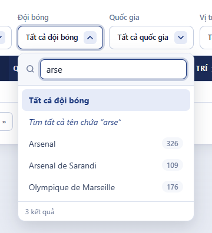
Các danh sách dài (giải đấu, đội bóng, quốc gia…) mở ra có ô tìm ở trên cùng và số thẻ bên phải mỗi dòng. Gõ vài chữ để lọc, bấm Enter hoặc bấm vào dòng để chọn.
Các ô chọn Mùa luôn xếp: 26 LIVE, 25 LIVE trên cùng, rồi mùa theo năm (2006 → 2017), sau đó các mùa đặc biệt theo tên A–Z.
1Bảng điều khiển
Mục Tổng quan: xem nhanh tình trạng tài khoản, sửa thông tin HLV và EP.
Xem ảnh màn hình
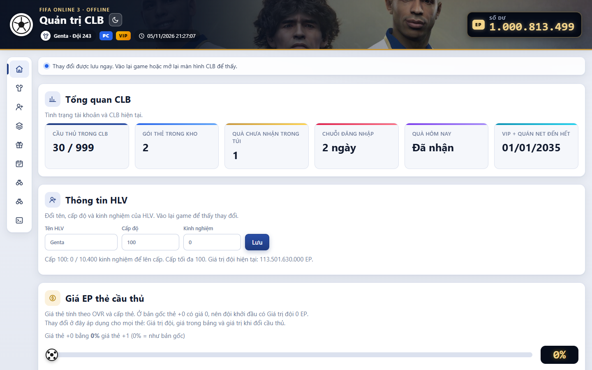
Tổng quan CLB
Số cầu thủ trong CLB (tối đa 9999), số gói trong kho, quà chưa nhận trong Túi, chuỗi ngày đăng nhập, quà hôm nay, hạn VVIP + quán net.
Thông tin HLV
- Sửa Tên HLV (2–16 ký tự), Cấp độ (tối đa 100), Kinh nghiệm.
- Bấm Lưu, vào lại game để thấy.
Số dư EP
Nhập số (tối đa 999999999999) rồi bấm Cộng EP, Trừ EP hoặc Đặt số dư.
MP và Cash
Số MP và Cash hiện trong Cửa hàng, mặc định 0. Nhập số (0 – 999999999) vào hai ô rồi bấm Lưu, vào lại game để thấy. Mọi món trong Cửa hàng tính bằng EP, nên MP / Cash chỉ để hiển thị, đặt 0 không chặn việc mua.
Sao lưu tài khoản
- Sao lưu ra Desktop: tạo file
FO3_SaoLuu_<tên HLV>_<ngày giờ>.fo3savetrên Desktop, gồm đội hình, thẻ, EP, HLV, túi đồ, cài đặt GM và ảnh HLV tự tạo. - Khôi phục: chọn file .fo3save rồi bấm Khôi phục (nên thoát game trước). Tài khoản đang chơi tự được sao lưu vào
Server\gamedata\backuptrước khi thay, lỡ tay vẫn lấy lại được. - Launcher cũng có nút Sao lưu / Khôi phục (xem Launcher & cập nhật).
2Cầu thủ
Quản lý cầu thủ trong CLB, thêm thẻ mới, đổi cầu thủ, tỷ lệ đập thẻ và Team Color.
Cầu thủ CLB
Xem ảnh màn hình
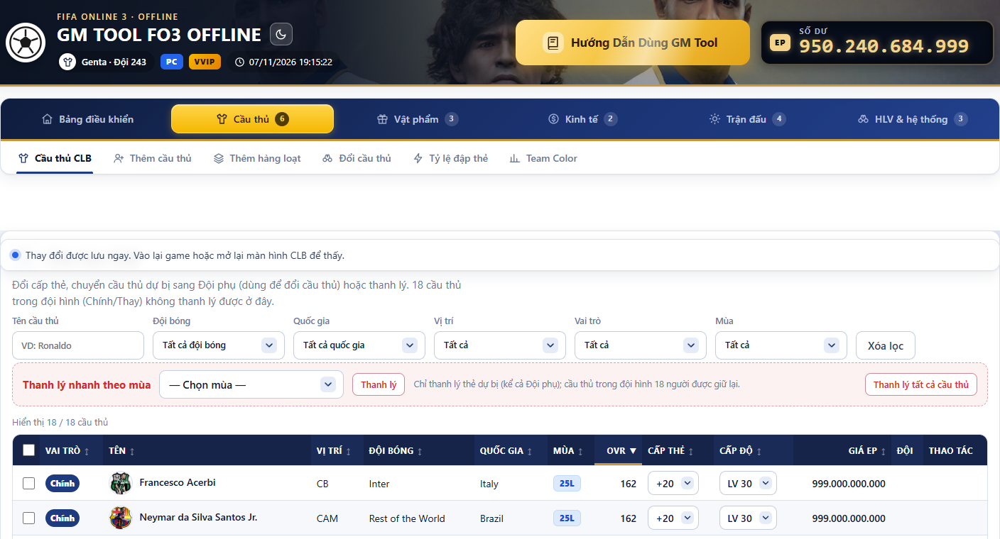
- Bộ lọc: tên, đội bóng, quốc gia, vị trí, vai trò (Chính / Thay / Dự bị / Đội phụ), mùa. Bấm Xóa lọc để bỏ lọc. Bấm tiêu đề cột để sắp xếp.
- Sửa từng cầu thủ: đổi trực tiếp ô Cấp thẻ (+0 → +20) và Cấp độ (LV 1 → 30) ở mỗi dòng.
- Sửa hàng loạt: tích ô đầu dòng (hoặc ô trên tiêu đề để chọn hết), thanh công cụ hiện ra: Đặt cấp thẻ, Đặt cấp độ, Sang đội phụ, Về đội chính, Thanh lý, Bỏ chọn.
- Thanh lý nhanh theo mùa: chọn mùa rồi bấm Thanh lý để bỏ toàn bộ thẻ dự bị (kể cả Đội phụ) của mùa đó.
- Thanh lý tất cả cầu thủ (nút đỏ bên phải): bỏ toàn bộ cầu thủ dự bị và Đội phụ trong một lần.
Xem chi tiết và so sánh thẻ: bấm tên cầu thủ (ở đây hoặc ở Thêm cầu thủ) để mở thẻ chi tiết (OVR, vị trí, chiều cao, chân thuận, kỹ thuật, giá EP, đủ chỉ số). Đổi ô Cấp thẻ / Cấp độ trong thẻ để xem trước chỉ số. Bấm Ghim để so sánh, mở thẻ khác rồi bấm So sánh với …. Bấm × hoặc Esc để đóng.
Xem ảnh thẻ chi tiết
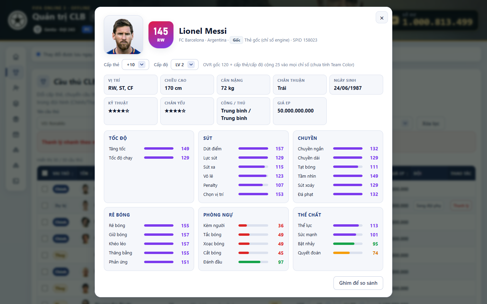
Thêm cầu thủ
Xem ảnh màn hình
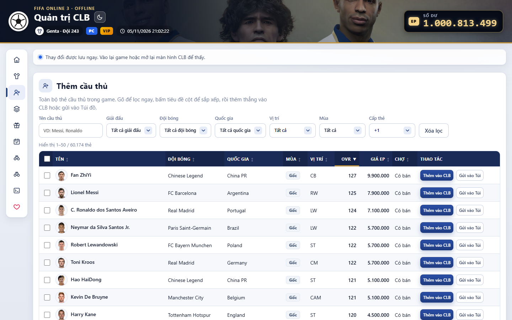
- Gõ Tên cầu thủ (ví dụ Haaland) hoặc lọc theo giải đấu, đội bóng, quốc gia, vị trí, mùa.
- Chọn Cấp thẻ (+1 → +20) và Cấp độ (LV 1 → 30) muốn thêm. Cột OVR và Giá EP tự đổi theo cấp thẻ.
- Bấm Thêm vào CLB ở dòng cầu thủ, hoặc Gửi vào Túi để vào game bấm Nhận (nhận từ Túi vẫn đúng cấp thẻ và cấp độ đã chọn).
- Thêm nhiều thẻ một lúc: tích chọn các dòng rồi bấm Thêm tất cả vào CLB (dùng cấp thẻ và cấp độ ở trên).
Dùng các nút « ‹ Trước / Sau › » và ô Mỗi trang (25 – 200) để chuyển trang. Cột Chợ cho biết thẻ có bán trên thị trường chuyển nhượng hay không.
Thêm hàng loạt
Xem ảnh màn hình
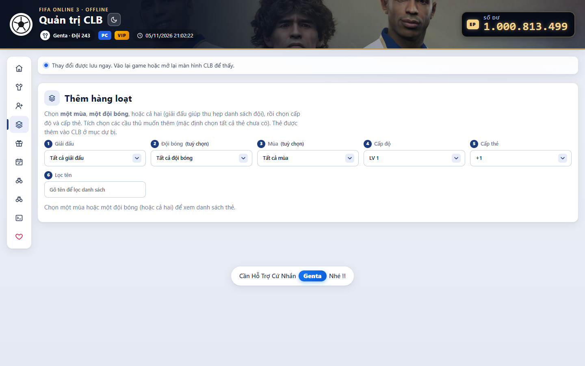
- Giải đấu (không bắt buộc): giúp thu hẹp danh sách đội.
- Chọn Đội bóng và/hoặc Mùa. Phải chọn ít nhất một trong hai.
- Chọn Cấp độ (LV 1 → 30) và Cấp thẻ (+1 → +20) cho các thẻ sẽ thêm.
- Danh sách hiện ra, mặc định đã tích các thẻ bạn chưa có. Dùng các nút: Chọn tất cả, Bỏ chọn, Chọn vừa chỗ trống, Bỏ thẻ đã có. Có thể lọc thêm theo quốc gia, vị trí, tên.
- Bấm Thêm cầu thủ đã chọn vào CLB. Thẻ vào mục dự bị.
Đổi cầu thủ
Xem ảnh màn hình
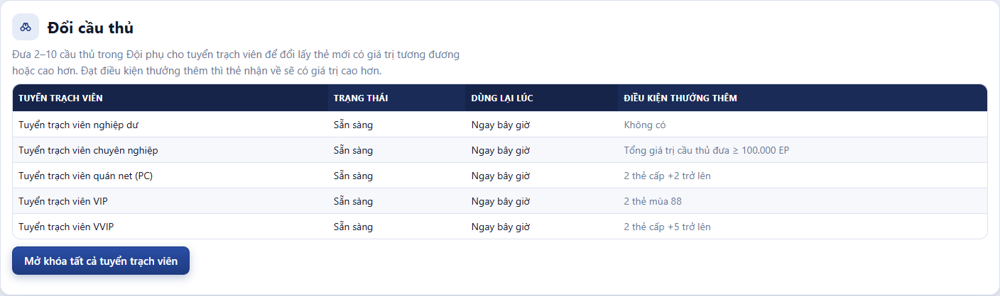
- Bảng hiện từng tuyển trạch viên (gồm cả Tuyển trạch viên VVIP), trạng thái, giờ dùng lại và điều kiện thưởng thêm.
- Mở khóa tất cả tuyển trạch viên: dùng lại ngay, không phải chờ.
- Cầu thủ muốn đem đổi phải ở Đội phụ (chuyển ở Cầu thủ CLB, nút Sang đội phụ).
Tỷ lệ đập thẻ
Xem ảnh màn hình
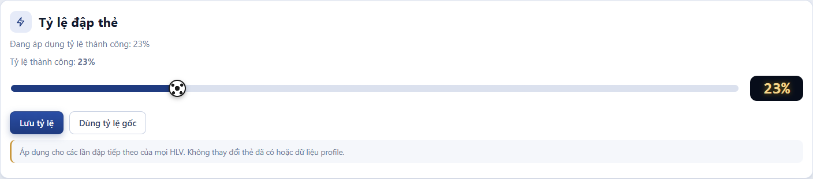
- Kéo thanh Tỷ lệ thành công (1% – 100%). Mặc định là 30%.
- Bấm Lưu tỷ lệ. Dòng trên cùng cho biết tỷ lệ đang áp dụng.
Dùng tỷ lệ gốc: trả về cách tính của game (theo cấp thẻ và nguyên liệu). Áp dụng ngay cho các lần đập tiếp theo, không cần vào lại game, không đổi thẻ đã có.
Tỷ lệ theo từng cấp thẻ: bảng 20 ô, mỗi ô là tỷ lệ của một bước nâng (+0→+1 … +19→+20), nhập 0 – 100% (lẻ được 0,1%), ví dụ +1→+2: 100%, +2→+3: 80%. Bấm Lưu theo từng cấp để dùng bảng này thay cho tỷ lệ chung. Điền tỷ lệ gốc của game / Điền đều theo tỷ lệ chung chỉ điền sẵn vào bảng (chưa lưu). Kéo hàng loạt: chọn khoảng cấp (Từ … đến …) rồi kéo thanh, các ô trong khoảng đổi theo ngay; tick Giảm dần tới để tỷ lệ giảm đều từ giá trị thanh kéo xuống số bên cạnh. Bùa tăng tỉ lệ và điểm nâng cấp vẫn nhân thêm như trong game. Muốn tắt bảng thì bấm Lưu tỷ lệ hoặc Dùng tỷ lệ gốc ở trên.
Mỗi ô hiện huy hiệu cấp thẻ đúng màu như trong game (viền trái ô theo màu cấp đích): 0 đen · +1 bạc · +2 – +4 đồng · +5 – +7 bạc xanh · +8 – +10 vàng · +11 – +13 xanh lá · +14 – +16 đỏ · +17 – +19 tím · +20 viền cầu vồng.
Team Color
Xem ảnh màn hình
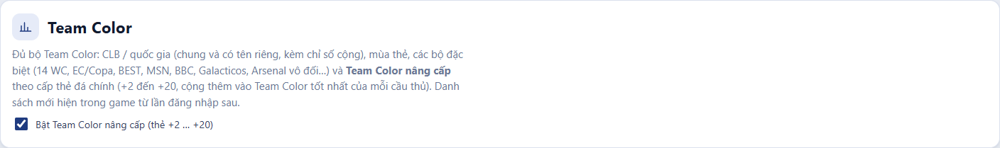
Game có đủ bộ Team Color: CLB / quốc gia (kèm chỉ số cộng), mùa thẻ (Season 06, 17…, có cả Season 26L và Season 25L), các bộ đặc biệt (14 WC, EC/Copa, BEST, MSN, BBC, Galacticos…) và Team Color nâng cấp theo cấp thẻ đội hình chính (+2 đến +20). Mỗi màu đều có icon riêng trong game.
Ô Bật Team Color nâng cấp (thẻ +2 … +20): mặc định bật, tích / bỏ tích là lưu ngay. Thay đổi hiện trong game từ lần đăng nhập sau.
3Vật phẩm
Tặng gói thẻ, gửi quà vào Túi, dọn kho đồ, tạo gói tự chọn và chỉnh quà đăng nhập hằng ngày.
Gói thẻ & Túi đồ
Xem ảnh màn hình
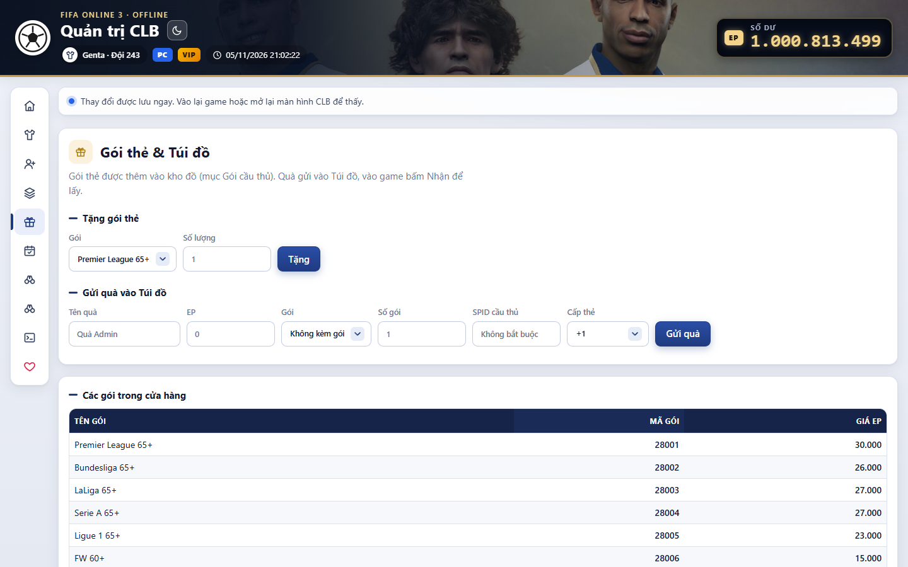
- Tặng gói thẻ: chọn Gói, nhập Số lượng (tối đa 999), bấm Tặng. Gói vào Kho đồ.
- Gửi quà vào Túi đồ: đặt Tên quà, điền EP, Gói + Số gói, SPID cầu thủ + Cấp thẻ, bấm Gửi quà. Trong game vào Kho đồ → tab Kho, bấm Nhận.
- Kho đồ của HLV: bảng gói và vật phẩm trong kho. Nhập số rồi bấm Xoá để xoá một phần, để trống ô để xoá hết món đó. Xoá toàn bộ kho đồ dọn sạch kho (có hỏi lại).
- Các gói trong cửa hàng: danh sách mọi gói đang bán kèm mã gói và giá EP. Trong game mỗi gói mua được 1, 10, 30, 50, 100 hoặc 200 cái một lần.
Xem ảnh Kho đồ
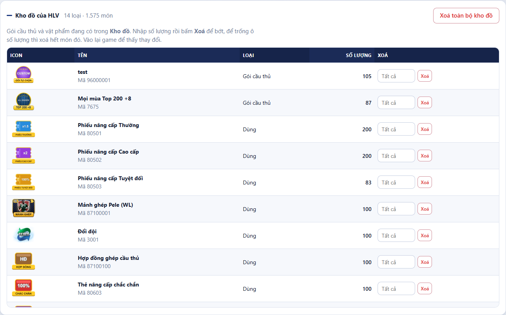
Gói tự chọn
Xem ảnh màn hình
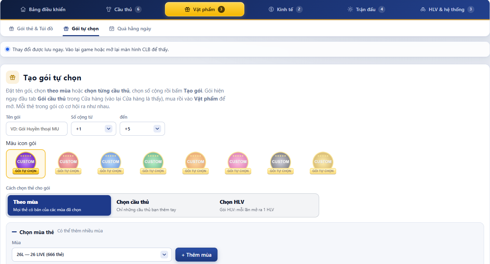
- Đặt Tên gói (ví dụ "Gói Huyền thoại MU").
- Chọn Số cộng từ … đến … (+1 → +20, cấp thấp ra nhiều hơn). Muốn cố định thì chọn 2 số bằng nhau.
- Chọn Màu icon gói: icon "CUSTOM · GÓI TỰ CHỌN" có 8 màu.
- Chọn Cách chọn thẻ cho gói (một trong ba): Theo mùa (chọn mùa → + Thêm mùa), Chọn cầu thủ (gõ tên, bấm Thêm), hoặc Chọn HLV (gói HLV: chọn HLV → + Thêm HLV, chọn Sao HLV từ … đến …; mỗi lần mở ra 1 HLV ngẫu nhiên).
- Bấm Tạo gói. Làm lại từ đầu để xoá form.
- Trong game: Cửa hàng → Gói cầu thủ, gói tự chọn nằm đầu danh sách (giá 0 EP). Mua xong vào Kho đồ để mở.
- Bảng Các gói tự chọn đã tạo: mỗi dòng có Sửa, Gửi 10 gói vào Túi, Xoá.
Xem ảnh gói HLV và danh sách gói
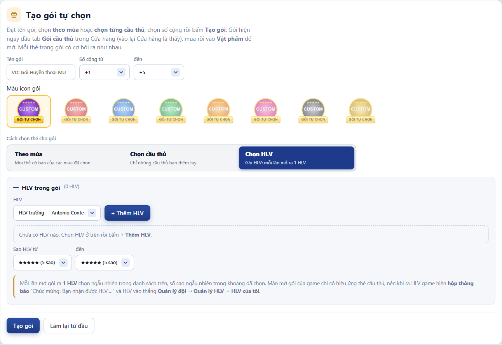
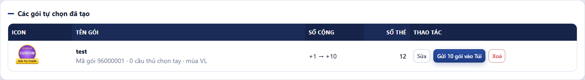
Quà hằng ngày
Xem ảnh màn hình
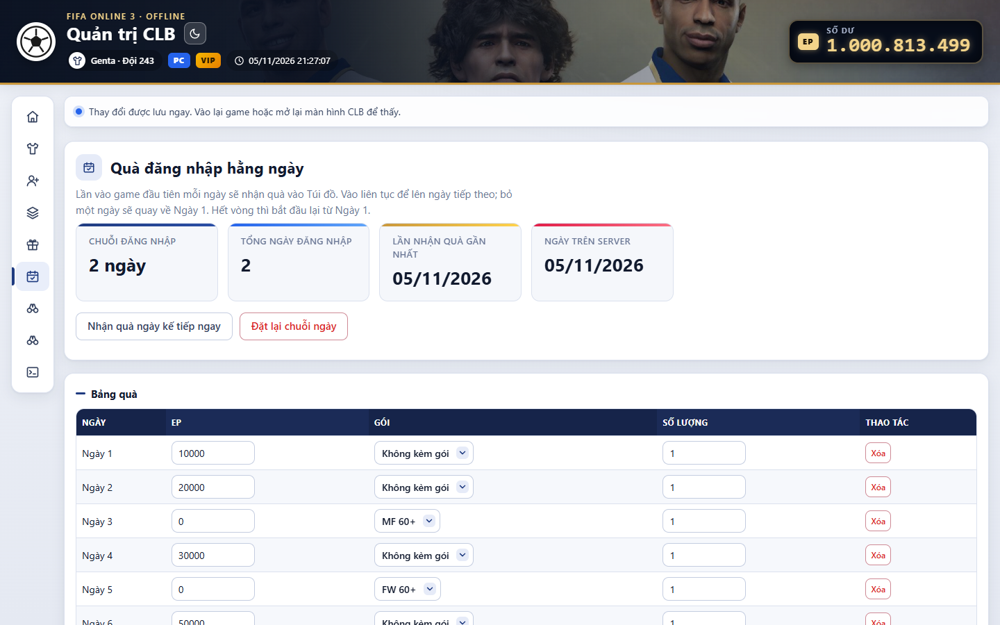
Quà nhận khi vào game lần đầu mỗi ngày. Vào liên tục để lên ngày tiếp theo; bỏ một ngày sẽ quay về Ngày 1. Hết vòng thì bắt đầu lại.
- Nhận quà ngày kế tiếp ngay: lấy luôn quà của ngày tiếp theo. Đặt lại chuỗi ngày: quay về Ngày 1.
- Bảng quà: mỗi ngày gồm EP, Gói, Số lượng (tối đa 999). Sửa xong bấm Lưu bảng. Thêm ngày để kéo dài vòng quà.
Mặc định mỗi ngày: 100 triệu EP + 100 gói All Season Top 200 +8. Quà vào Kho đồ → Kho, bấm Nhận.
4Kinh tế
Giá EP của thẻ và thị trường chuyển nhượng (TTCN). Cầu thủ đắt hay rẻ là do bạn chỉnh ở đây.
Giá EP thẻ
Xem ảnh màn hình
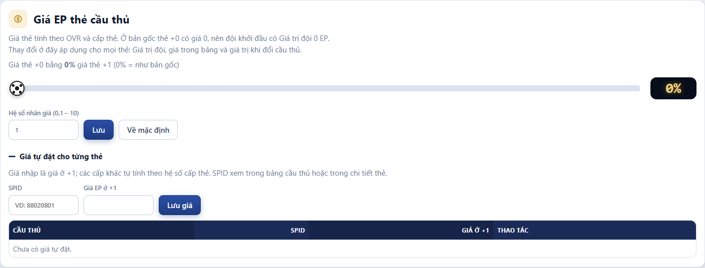
- Thanh trượt Giá thẻ +0: đặt giá thẻ +0 bằng bao nhiêu % giá thẻ +1 (0% như bản gốc).
- Hệ số nhân giá (0,1 – 10): nhân giá mọi cầu thủ, mọi cấp. Bấm Lưu, hoặc Về mặc định. Ví dụ 2 = mọi thẻ đắt gấp đôi, 0,5 = rẻ một nửa.
- Hệ số giá theo mùa (0,1 – 10): chọn Mùa, nhập Hệ số, bấm Lưu hệ số. Nhân giá mọi thẻ của mùa đó, ví dụ PRIME × 0,5 rẻ một nửa, 26TY × 2 đắt gấp đôi. Bảng bên dưới liệt kê các mùa đã chỉnh, bấm Xóa để trả về 1.
- Giá tự đặt cho từng thẻ: nhập SPID và Giá EP ở +1, bấm Lưu giá. Các cấp khác tự tính theo (+1 → +20 luôn tăng dần). Thẻ đã đặt giá hiện ở bảng bên dưới, xoá được từng dòng. Giá tự đặt vẫn nhân thêm hệ số chung (đặt 10 triệu, hệ số 2 = 20 triệu).
- Ba cách trên nhân với nhau và áp dụng cho: giá mua bán trên TTCN, Giá trị đội, giá gói thẻ trong Cửa hàng, phí nâng cấp và giá trị khi trao đổi cầu thủ. Lưu xong server dùng giá mới ngay (màn TTCN đang mở trong game: đóng mở lại).
- Shop tính phí (mặc định bật từ bản 09/11): tắt = Shop miễn phí như trước. Bật: mọi món có giá đúng giá trị của nó (Lucky EP / hộp quà = EP trung bình nhận được, gói thẻ = giá trị trung bình thẻ ra × Hệ số giá gói thẻ, gói quà / gói tháng = tổng bên trong, món không chứa EP = giá cơ bản × hệ số giá ở trên). Khi bật: phí nâng cấp / phục hồi 5% giá trị thẻ (trả bằng EP), đề nghị trao đổi / tuyển trạch không vượt giá trị thẻ đã đưa (vượt thì đổi sang một cầu thủ ngẫu nhiên giá 80 – 100% mức đó, các đề nghị không trùng nhau), giá rao bán tối đa 105%, Shop MP ẩn. Lưu xong, lần mở Shop tiếp theo trong game sẽ thấy giá mới.
Thị trường
Xem ảnh màn hình
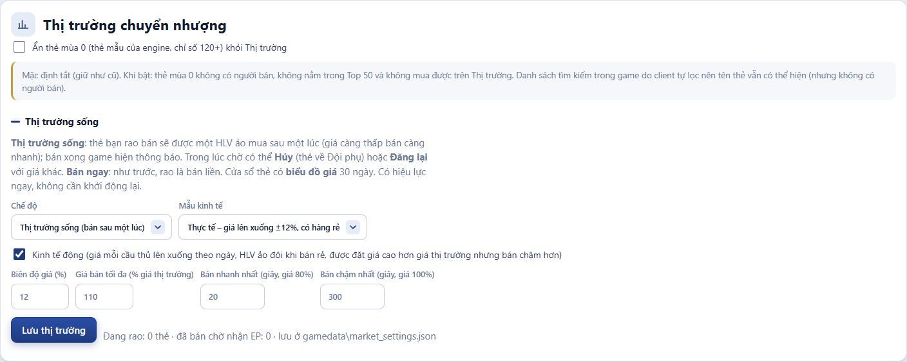
- Ẩn thẻ mùa 0 (thẻ mẫu của engine, chỉ số 120+, game hiện nhầm là mùa "17"): mặc định tắt (Koeman, Cantona, Zico… chỉ có thẻ mùa 0). Khi bật, thẻ mùa 0 không có người bán, không vào Top 50, không mua được, không ra trong đề nghị trao đổi và bị ẩn khỏi mọi danh sách thẻ của GM Tool. Tích / bỏ tích là lưu ngay.
- Chế độ: Thị trường sống (mặc định; thẻ bạn rao bán được một HLV ảo mua sau một lúc, giá càng thấp bán càng nhanh, bán xong game báo; trong lúc chờ có thể Hủy hoặc Đăng lại) hoặc Bán ngay.
- Mẫu kinh tế: Dễ (giá cố định, bán sau 10 giây – 2 phút), Thực tế (mặc định; giá lên xuống ±12% theo ngày, có hàng rẻ, bán sau 20 giây – 5 phút), Khó (±20%, bán 1 – 15 phút), Tùy chỉnh.
- Các ô chi tiết: Kinh tế động, Biên độ giá (0 – 30%), Giá bán tối đa (100 – 150% giá thị trường), Bán nhanh nhất / Bán chậm nhất (giây). Sửa bất kỳ ô nào thì mẫu tự chuyển sang Tùy chỉnh.
- Bấm Lưu thị trường, có hiệu lực ngay. Dòng chữ cạnh nút cho biết số thẻ đang rao và đã bán chờ nhận EP.
Trong game, cửa sổ thẻ cầu thủ có thêm biểu đồ giá 30 ngày.
5Trận đấu
Sân và thời tiết, phần thưởng sau trận, sức mạnh đội máy và Xếp hạng với HLV ảo.
Cài đặt trước trận
Xem ảnh màn hình
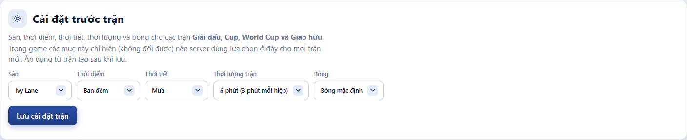
Dùng cho các trận Giải đấu, Cup, World Cup và Giao hữu (trong game các mục này chỉ hiện, không đổi được).
- Sân: Sân nhà của đội chủ nhà, Ngẫu nhiên, hoặc một sân cụ thể.
- Thời điểm: Ban ngày (mặc định), Ban đêm hoặc Ngẫu nhiên.
- Thời tiết: Trời đẹp (mặc định), Mưa, Tuyết, Âm u hoặc Ngẫu nhiên (không ra tuyết).
- Thời lượng trận: 6, 8, 10 hoặc 12 phút (mặc định 6). Bóng: quả bóng thi đấu.
Bấm Lưu cài đặt trận. Áp dụng từ trận tạo sau khi lưu.
Thưởng sau trận
Xem ảnh màn hình
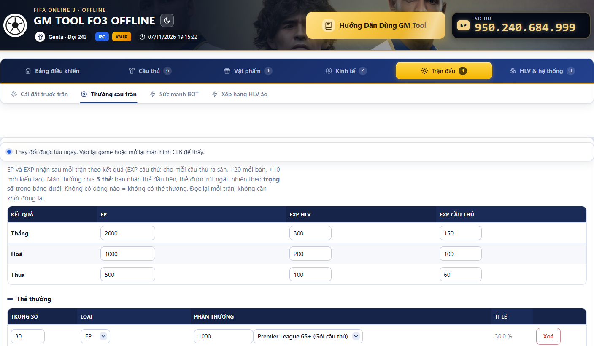
- Bảng trên: mỗi kết quả Thắng / Hoà / Thua có EP, EXP HLV và EXP cầu thủ (cho mỗi cầu thủ ra sân, thêm +20 mỗi bàn, +10 mỗi kiến tạo).
- Bảng Thẻ thưởng: màn thưởng chia 3 thẻ, bạn nhận thẻ đầu tiên, rút ngẫu nhiên theo Trọng số (1 – 1000). Mỗi dòng chọn EP hoặc Gói / vật phẩm. Cột Tỉ lệ tự tính %.
- Thêm dòng thẻ / Xoá ở cuối dòng. Bấm Lưu thưởng sau trận (không cần khởi động lại).
Mặc định (từ bản 09/11, cho đủ EP mua gói và nâng cấp): Thắng 2.000.000 EP / 300 EXP HLV / 150 EXP cầu thủ; Hoà 1.000.000 / 200 / 100; Thua 500.000 / 100 / 60. Thẻ thưởng mặc định có 7 dòng (EP 100.000 – 1.000.000, gói 26L Top 200, gói 14 Top 200, vật phẩm EP may mắn). Trung bình mỗi trận thắng khoảng 2,3 triệu EP, gói 26TY All +8 khoảng 60 trận. Máy đã tự lưu mức riêng thì giữ mức của mình.
Sức mạnh BOT
Xem ảnh màn hình
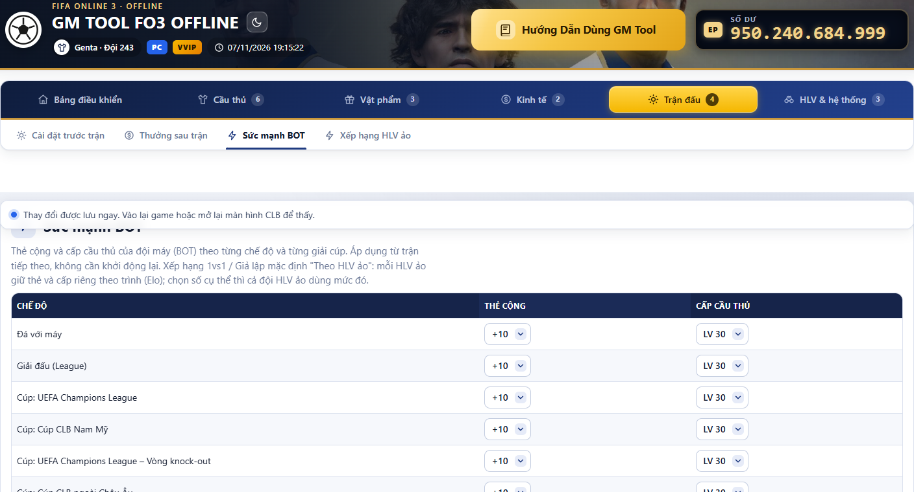
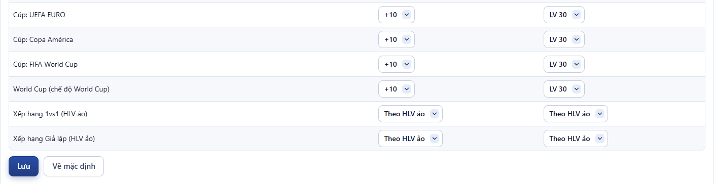
- Mỗi chế độ có ô Thẻ cộng (+0 → +20) và Cấp cầu thủ (LV 1 → 30) của đội máy: Đá với máy, Giải đấu (League), từng giải Cúp riêng (UEFA Champions League, Cúp CLB Nam Mỹ, các cúp quốc gia, EURO, Copa América, FIFA World Cup…), World Cup, Xếp hạng 1vs1 và Xếp hạng Giả lập.
- Hai dòng Xếp hạng mặc định là Theo HLV ảo: mỗi HLV ảo giữ thẻ và cấp riêng theo trình độ (Elo), càng lên hạng càng gặp đội mạnh. Chọn một mức cụ thể thì cả đội HLV ảo dùng mức đó.
- Bấm Lưu. Áp dụng từ trận tiếp theo, không cần khởi động lại.
Về mặc định: mọi chế độ +10, LV 30; Xếp hạng về "Theo HLV ảo".
Xếp hạng HLV ảo
Xem ảnh màn hình
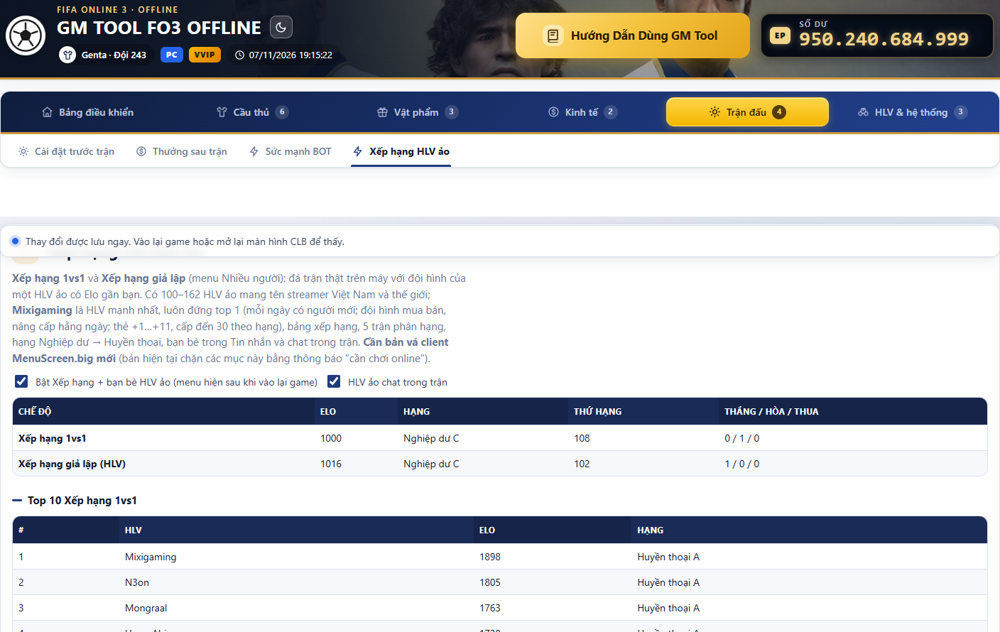
Xếp hạng 1vs1 và Xếp hạng giả lập (menu Đá với người): đá trận thật trên máy với đội hình của một HLV ảo có Elo gần bạn. Ba nút Xếp Hạng 1vs1, Xếp Hạng Giả Lập và Xếp hạng trong game là cùng một chế độ (hai nút đầu là lối tắt, nút cuối là sảnh chính có bảng xếp hạng, bạn bè, phần thưởng).
- Có 100 → 162 HLV ảo mang tên streamer Việt Nam và thế giới (mỗi ngày có 0–3 người mới, đội hình mua bán và nâng cấp hằng ngày). Mixigaming là HLV mạnh nhất (Real Madrid, thẻ +9 → +12, LV 27–30, lối đá pressing) và luôn đứng top 1.
- 5 trận phân hạng, hạng từ Nghiệp dư đến Huyền thoại, 20 HLV ảo là bạn bè trong Tin nhắn, chat trong trận.
- Bật Xếp hạng + bạn bè HLV ảo và HLV ảo chat trong trận: mặc định bật, tích / bỏ tích là lưu ngay.
- Bảng của bạn: Elo, Hạng, Thứ hạng, Thắng / Hòa / Thua mỗi chế độ. Top 10 Xếp hạng 1vs1: dòng của bạn in đậm.
- Đặt lại Xếp hạng mùa này của tôi: xoá Elo và kết quả mùa này (có hỏi lại).
Giao hữu · Exhibition · King of the Hill
Thẻ thứ hai trong tab Xếp hạng HLV ảo. Ba chế độ này dùng chung đám đông HLV ảo nên cần bật Xếp hạng ở thẻ trên.
- Giao hữu, Exhibition, King of the Hill: tích / bỏ tích là lưu ngay. Menu trong game đổi sau khi vào lại game.
- Bộ vùng KOTH: Việt Nam (mặc định: Miền Bắc, Miền Trung, Tây Nguyên, Đông Nam Bộ, Tây Nam Bộ và các thành phố có dấu), Thái Lan hoặc Indonesia. Đổi bộ vùng thì vùng đã chọn trong game hết hiệu lực, game sẽ hỏi chọn vùng lại; HLV ảo tự chia về các thành phố của bộ mới.
Cách chơi từng chế độ trong game xem ở mục Tính năng trong game.
6HLV & hệ thống
Tạo và thêm HLV, reset nhân vật, xem nhật ký server.
HLV
Xem ảnh màn hình
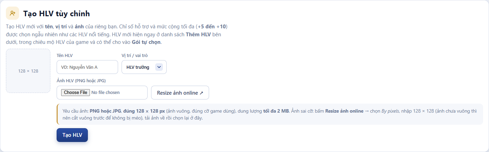
Tạo HLV tùy chỉnh:
- Nhập Tên HLV (ít nhất 2 ký tự), chọn Vị trí / vai trò.
- Bấm Ảnh HLV, chọn ảnh PNG hoặc JPG, đúng 128 × 128 px, tối đa 2 MB.
- Chỉ số hỗ trợ: để trống thì ngẫu nhiên +5 → +10 như HLV nổi tiếng. Muốn tự đặt thì tích Tự chọn chỉ số hỗ trợ, chọn Chỉ số 1 / 2 / 3 và Mức cộng tối đa (tới +50). HLV tự chọn chỉ số luôn giữ đúng 3 chỉ số đã chọn: không tập huấn "đổi chỉ số" được (tập huấn tăng mức cộng vẫn được), dòng nào lệch sẽ tự về đúng. Muốn đổi thì chỉnh tay ở bảng HLV của CLB.
- Bấm Tạo HLV. HLV mới hiện ở danh sách Thêm HLV (nhãn Tùy chỉnh), có trong chiêu mộ HLV của game và cho vào Gói tự chọn được.
Thêm HLV: lọc theo vị trí hoặc tên, chọn số sao (½ → 5) và số lượng (1 – 30), bấm Thêm. Trong game: Quản lý đội → Quản lý HLV → HLV của tôi. Xoá loại (chỉ HLV tùy chỉnh) bỏ hẳn loại đó, ảnh được cất vào sao lưu.
Xem ảnh Thêm HLV và HLV của CLB
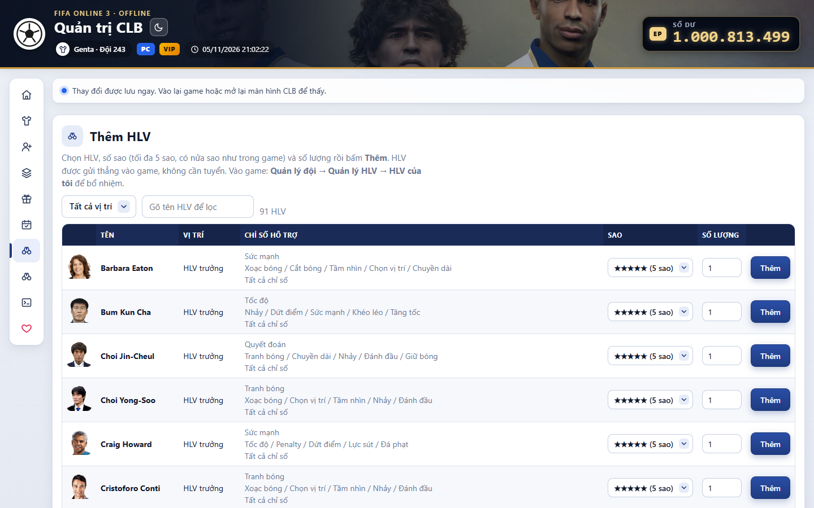
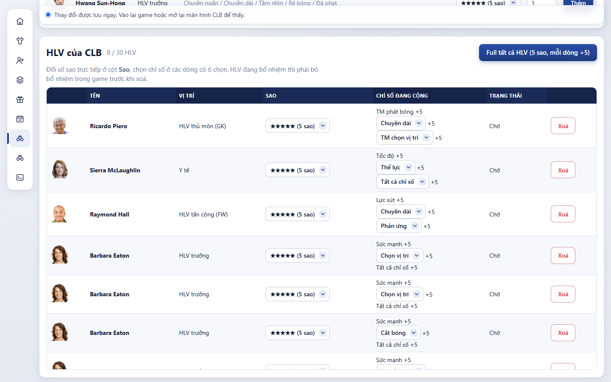
HLV của CLB: đổi số sao, đổi từng chỉ số hỗ trợ (chọn chỉ số khác trong danh sách) và mức cộng của chỉ số đó (1 – 99, vượt giới hạn thường của game), Xoá từng HLV. Full tất cả HLV: 5 sao và chỉ số tối đa. Xoá tất cả HLV: xoá các HLV đang Chờ (HLV đang bổ nhiệm / tập huấn được giữ lại).
Nhiệm vụ
Bật/tắt Nhiệm vụ & thành tích, chọn ngôn ngữ (Tiếng Việt / English / Bahasa Indonesia), hệ số Mục tiêu (0,1 – 10) và Phần thưởng (0 – 10). Bảng bên dưới hiện tiến độ 5 nhiệm vụ tuần của bạn.
- Trong game, Manager > Danh sách thành tích: 8 thành tích × 5 cấp (cấp HLV, số trận, trận thắng, nâng cấp, thẻ cấp cao, giá trị đội, bàn thắng, thắng Rank), thưởng EP + gói + vật phẩm; xong cả hàng được huy hiệu để đeo. Dòng Nhiệm vụ hằng ngày làm mới 00:00.
- Nút Quest trên thanh trên cùng: 5 nhiệm vụ tuần (làm mới thứ Hai 00:00), thưởng GP để đổi hộp quà trong cửa sổ Quest.
- Manager > Info Manager giờ có số liệu thật: số trận, thắng/hoà/thua, bàn thắng, chuỗi thắng ở Giải đấu, Cúp và Rank; vô địch, tiền thưởng cúp, thẻ mua/bán đắt nhất, thời gian chơi (tính từ bản này). Xếp hạng HLV có biểu đồ giá trị đội 30 ngày so với 20 bạn bè.
- Ngôn ngữ và nút Quest có hiệu lực sau khi vào lại game.
Reset nhân vật
Xem ảnh màn hình
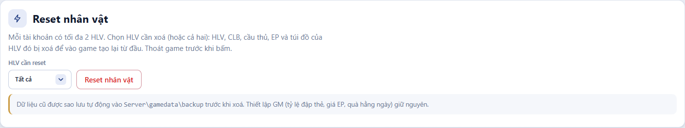
- Thoát game trước.
- Chọn HLV cần xoá (HLV 1, HLV 2 hoặc cả hai), bấm Reset nhân vật, xác nhận rồi gõ chữ RESET vào hộp xác nhận lần cuối.
- Vào game tạo HLV lại từ đầu.
Server\gamedata\backup; thiết lập GM (tỷ lệ đập thẻ, giá EP, quà hằng ngày, sức mạnh BOT) giữ nguyên.Nhật ký server
Xem ảnh màn hình
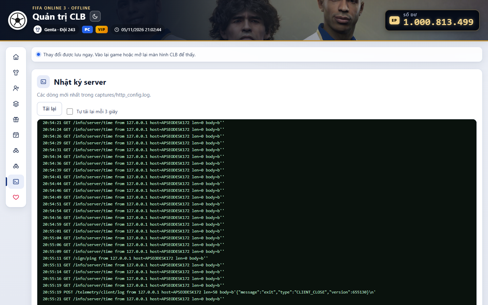
- Mặc định đã tích Chỉ hiện lỗi và Ẩn dòng lặp (giờ máy chủ). Bỏ tích để xem toàn bộ.
- Tải lại: lấy các dòng mới nhất. Tự tải lại mỗi 3 giây: theo dõi trực tiếp khi đang chơi.
- Xuất log lỗi (nút cam): tải file zip gồm nhật ký máy chủ, game, lỗi Windows và thông tin máy, gửi cho người hỗ trợ khi gặp lỗi.
7Database
Tab Database (nhóm HLV & hệ thống): sửa thẻ cầu thủ, mặt 3D, logo CLB, tạo mùa thẻ riêng, chia sẻ bằng file mod.
Hai lớp dữ liệu: server và client
Game đọc thông tin thẻ từ hai nơi, nên một thay đổi có hai bước:
| Lớp | Nằm ở | Dùng cho | Khi nào thấy |
|---|---|---|---|
| Server | Server\gamedata\fifadb.sqlite | Giá EP, OVR trong danh sách, Thị trường, gói thẻ, đề nghị trao đổi, tìm kiếm trên GM Tool | Ngay khi bấm Lưu |
| Client | data\data_0.big, data\ui\components\Label.big | Chỉ số trong trận, màn thông tin thẻ, mặt 3D, icon mùa | Sau khi bấm Áp dụng vào game |
Áp dụng vào game
- Sửa xong thẻ / mặt / mùa, thoát game (game đang mở thì nút báo lỗi, không đụng vào file nào).
- Bấm Áp dụng vào game → xác nhận. Server chạy bộ dựng client trong nền khoảng 1 phút; khung nhật ký hiện từng bước.
- Bộ dựng lấy bản gốc của
data_0.big/Label.big, ghép vào đó toàn bộ dữ liệu thẻ hiện tại của server (thẻ mới, mùa huyền thoại, PRIME / INFINITY PRIME, thẻ đã sửa, mùa tự tạo), dòng 3D, icon mùa, AC Milan và 2 đội PRIME. Vì dựng lại từ đầu mỗi lần nên không bao giờ bị chồng lỗi, và sửa của bạn không bị mất khi dựng lại. - Cài vào game: 2 file đang dùng được sao lưu vào
Server\tools\clientbuild\backup\<ngày-giờ>(giữ 2 bản gần nhất), rồi chép bản mới vào. Dòng cuối nhật ký báo Đã cài vào game. - Mở game kiểm tra. Muốn bạn bè có bản này: push cập nhật như thường lệ (launcher của họ sẽ bắt buộc cập nhật).
Server ools\clientbuild, có bản gốc data_0.big) được gửi kèm bản cập nhật. Lưu ý: bản vá sau có đổi data_0.big sẽ ghi đè bản bạn tự dựng; các chỉnh sửa thẻ vẫn còn, chỉ cần bấm Áp dụng vào game lại.backup\<ngày-giờ> đè lên data\data_0.big và data\ui\components\Label.big.Sửa thẻ
- Gõ tên (vd Messi) hoặc SPID vào ô Tên / SPID, bấm Tìm. Bấm Sửa ở thẻ cần sửa.
- Sửa 33 chỉ số (1 – 150), 4 vị trí, chân thuận, chân yếu (1 – 5★), kỹ thuật (1 – 5★), tinh thần tấn công / phòng ngự, CLB (chuyển nhượng: giải đấu tự đổi theo CLB) và đặc điểm (trait) (30 ô tích).
- Bấm Lưu thẻ. Ô đã sửa có viền màu, rê chuột vào ô thấy giá trị gốc. OVR, giá EP tính lại ngay.
- Khôi phục gốc: trả thẻ về chỉ số / CLB / ngoại hình ban đầu. Bảng Thẻ đã sửa liệt kê mọi thẻ đã sửa, mở hoặc khôi phục từng thẻ.
Giá trị gốc được lưu ở Server\gamedata\card_edits.json. Sửa tay một ô về đúng giá trị gốc thì ô đó tự bỏ khỏi danh sách sửa.
Ngoại hình 3D
- Mượn đầu từ (SPID / ID): nhập SPID hoặc ID cầu thủ của một người có mặt trong game, thẻ đang sửa sẽ dùng đầu, mặt, da, mắt của người đó.
- Các ô số: kiểu tóc, màu tóc, kiểu râu, màu râu, màu da, màu mắt, dáng người (khoảng giá trị ghi trong ngoặc). Mặt quét thật giữ tóc của nó.
- Có tác dụng sau khi Áp dụng vào game. Thẻ sửa mặt có dòng 3D riêng; bảng 3D của game giới hạn khoảng 64.300 dòng (quá là game treo lúc tải), bộ dựng tự giữ giới hạn này.
Mùa tự tạo
- Chọn Mã (các mã còn trống, nhỏ hơn 100), nhập Tên mùa, Nhãn (tối đa 5 chữ, hiện trên thẻ / bộ lọc), chọn Icon (ảnh PNG bất kỳ, trang tự thu về 30 × 24 và hiện xem trước). Bấm Lưu mùa.
- Bấm Thẻ ở dòng mùa đó, nhập SPID thẻ gốc (nhiều thẻ cách nhau dấu phẩy) và Cộng chỉ số (−20 → +20), bấm Thêm thẻ. Thẻ mới = bản sao thẻ gốc (chỉ số + mức cộng; chỉ số thủ môn chỉ cộng cho thủ môn), giữ mặt 3D của thẻ gốc. Sửa tiếp được như thẻ thường.
- Tên mùa trong game và bộ lọc mùa ở Thị trường có ngay. Gói Top 200 và nhãn mùa trên GM Tool có sau khi khởi động lại server (tắt / mở lại launcher). Icon mùa và mặt 3D có sau khi Áp dụng vào game.
- Xoá một thẻ hoặc cả mùa: chỉ được khi thẻ đó không có trong CLB (bán / xoá thẻ trong CLB trước).
Logo CLB
Gõ tên CLB vào ô CLB và chọn trong gợi ý, chọn Ảnh logo (trang tự làm 2 cỡ 256 và 128 px, giữ tỉ lệ, nền trong suốt), bấm Thay logo. Mở lại màn hình trong game là thấy. Khôi phục logo gốc trả lại logo ban đầu (bản gốc giữ ở Server\gamedata\crest_backup).
File mod
- Xuất file mod: tải một file
.jsonchứa mọi mùa tự tạo (tên, nhãn, icon, danh sách thẻ + mức cộng) và mọi thẻ đã sửa (chỉ số mới, ngoại hình). - Nhập file mod: chọn file đó trên máy khác. Mùa trùng mã với thẻ có sẵn bị bỏ qua và ghi vào thông báo. Nhập xong bấm Áp dụng vào game.
♥Tính năng trong game
Các chế độ và thay đổi mới bạn sẽ gặp khi chơi.
Thưởng lên cấp HLV
Mỗi cấp HLV từ 2 đến 100 có thưởng theo bảng của FO3: EP (50.000 ở cấp đầu, tới khoảng 29 triệu ở cấp 100) và vật phẩm (gói Top 300 / Top 100 / Best 50 / Best 10 / Best 7, gói giải 65+, gói 70+ theo vị trí, vé giả lập, thẻ đổi đội, thẻ EXP cầu thủ). Thưởng vào Túi đồ với tên "Thưởng lên cấp HLV Lv.x". Màn kết quả sau trận hiện popup lên cấp với các vật phẩm vừa nhận; nút ⓘ xem thưởng các cấp sau. Cấp đã có trước bản này không được trả bù.
Giao hữu (Đá với người)
- 1on1 và VS Random: tìm vài giây rồi gặp một HLV ảo có Elo gần bạn.
- VS Custom (phòng tự tạo): bấm Mời bạn chọn một HLV ảo trong danh sách bạn bè (vào phòng sau 2 – 4 giây, tự sẵn sàng), hoặc đổi sang đấu với máy: chọn quốc gia / giải / CLB và độ khó (Nghiệp dư → Huyền thoại) rồi bấm Bắt đầu.
- Luôn là 1vs1: bản offline là phiên 1 người (bạn điều khiển cả đội, đội kia do máy đá), 2vs2 – 5vs5 cần người thật nên luôn về 1on1.
- Kết quả vào Thành tích HLV (Giao hữu: nhanh / tùy chọn / với máy) và Info Manager, không đổi Elo Xếp hạng.
King of the Hill (Vua đấu trường)
- Lần đầu vào: xem giới thiệu, rồi chọn vùng (bộ Việt Nam: chọn miền rồi thành phố). Ô chọn hiện số người mỗi vùng.
- Bắt đầu: gặp một HLV ảo cùng vùng có điểm KOTH gần bạn. Thắng / thua đổi điểm (Elo), màn thưởng hiện ô "Điểm hạng" trước và sau trận.
- Bảng xếp hạng theo vùng / thành phố (HLV ảo + bạn). Mỗi tháng (giờ Việt Nam) là một mùa mới, điểm về 1000, giữ vùng cũ. Chưa có quà tuần / quà mùa.
Exhibition (Live Center)
- Mỗi bên đá bằng một CLB có bản quyền (đội hình của CLB đó, không phải đội của bạn): dùng mũi tên để đổi giữa 8 CLB mạnh nhất, hoặc Chọn đội để chọn bất kỳ CLB nào (có đủ 11 đá chính + 7 dự bị).
- Bấm Mời bạn chọn một HLV ảo, họ vào phòng với CLB của họ và sẵn sàng; bấm Sẵn sàng để đá.
- Tối đa 5 trận / ngày. Có EP và EXP HLV, thẻ của bạn không nhận EXP (bạn đá bằng CLB khác).
World Cup: đội tuyển châu Á mới
- Nhóm châu Á ở màn chọn đội có thêm Việt Nam, Nhật Bản, Hàn Quốc, Ả Rập Saudi, Iran, Iraq, Thái Lan (cạnh China PR, Úc, Ấn Độ).
- Việt Nam: đủ 29 cầu thủ của hai mùa VN Legend (12 huyền thoại, dùng thẻ INFINITY có OVR cao nhất) và VN STAR (17 cầu thủ thế hệ mới: Quang Hải, Văn Hậu, Tiến Dũng…), áo đỏ trơn, logo cờ Việt Nam viền vàng.
- Các đội khác: cầu thủ cùng quốc tịch, mỗi người một thẻ OVR cao nhất, không ai nằm ở hai đội. Áo theo màu thật của từng nước, logo ngực là khiên mang quốc kỳ.
- Tất cả thẻ của các đội này +10, LV 20. Có cờ ở màn chọn đội, màn chia bảng, biểu tượng tròn ở màn tiến trình và logo trên thanh thông tin trong trận.
Đấu giải (Đá với máy)
Giải đấu có đủ mọi đội của giải (trước giới hạn 20): hạng Nhất Anh 24 đội, giải lớn nhất 40 đội. Giải thật có 20 đội (Ngoại hạng Anh…) vẫn 20. Áp dụng cho mùa giải tạo mới.
Lỗi giao diện
Khi một màn hình gặp lỗi, game không còn hiện popup "Tính năng này chưa chạy được ở bản offline" (lỗi mạng / server vẫn báo). Lỗi vẫn được ghi trong nhật ký server để tra cứu.
Shop và CLB
- Gói 4 mùa mới nằm đầu tab Gói cầu thủ: mỗi mùa 26TY, 26TS, PRM, IPRM có 6 gói từ rẻ tới đắt: All +8, Top 100 +8~+10, Top 50 +10~+13, Top 20 +13~+16, Top 10 +16~+18, Top 3 +18~+20 (26TY chỉ 23 thẻ nên dùng Top 15 / 10 / 5 / 3 / 1). Cấp thấp ra nhiều hơn cấp cao.
- Trao đổi cầu thủ: các lời đề nghị luôn là các cầu thủ khác nhau.
- Giải đấu / Cúp: bấm Bắt đầu trận đấu là vào đá luôn, không còn popup chọn "đá nhanh" (tự nhập tỉ số, dễ ghi sai) hay "đá thường".
- Banner SOGE Store (trang 1 của tab Nên mua trong Cửa hàng): bấm vào mở trang sogestore.vn trên trình duyệt (cửa sổ trình duyệt có thể nằm sau cửa sổ game).
- Đổi số áo (Phòng thay đồ): đổi được cho mọi cầu thủ, kể cả khi nhiều cầu thủ đang trùng số (CLB hơn 99 thẻ). Chọn số đã có người mang thì hai cầu thủ đổi số cho nhau.
- Màn Chuẩn bị trận đấu (Xếp hạng, Giao hữu, KOTH, Exhibition): tên HLV đội nhà thẳng hàng với tên CLB. Màn Đá với người: 3 nút 1on1 / VS Random / VS Custom nằm giữa màn hình.
♦Mùa thẻ & CLB mới
Các mùa thẻ và CLB được thêm vào bản offline.
26 LIVE / 25 LIVE
- Hai mùa lấy từ FO4: 26 LIVE (666 thẻ) và 25 LIVE (51 thẻ), nằm trên cùng danh sách Mùa ở Chuyển nhượng và mọi ô chọn mùa của GM Tool (huy hiệu 26L / 25L).
- Cầu thủ đã có trong game giữ nguyên mặt và tên. Cầu thủ hoàn toàn mới (Lamine Yamal, Pedri…) dùng mặt chung trên sân, ảnh đại diện lấy từ FO4.
- Thẻ của CLB không có trong game (Porto, Benfica, Ajax…) hiện đội Rest of the World.
- Có gói 26L Top 200 và 25L Top 200 trong Cửa hàng, Team Color Season 26L / Season 25L.
PRIME / INFINITY PRIME
- Hai mùa huyền thoại mới cho mọi huyền thoại trong game, icon lấy đúng từ FO4: PRIME (nhãn PRM, +2 so với thẻ huyền thoại tốt nhất của cầu thủ đó) và INFINITY PRIME (nhãn IPRM, +4).
- Nằm trên 26 LIVE trong danh sách mùa. Mỗi mùa có đội riêng (logo PRIME / INFINITY PRIME), gói PRM Top 200 / IPRM Top 200, và có trong đề nghị trao đổi / giao dịch cầu thủ.
- Huyền thoại và siêu sao còn thiếu mùa (vd Ferdinand, Beckham, C. Ronaldo, Messi, Gullit) đã được thêm các mùa huyền thoại, mỗi mùa một ảnh đại diện riêng.
26 TOTY / 26 TOTS
- 26 TOTY (nhãn 26TY, 23 thẻ: Kane, Mbappé, Haaland, Yamal…, chỉ số +6) và 26 TOTS (nhãn 26TS, 143 thẻ, +4) so với thẻ 26 LIVE của cầu thủ đó, vị trí chính và chỉ số ẩn theo thẻ FO4. Cầu thủ không có trong game bị bỏ qua.
- Icon mùa, ảnh mini riêng của từng thẻ (lấy từ fifaaddict), Team Color Season 26TY / 26TS, gói Top 200 và 6 gói theo bậc (xem Shop và CLB).
- Bốn mùa mới (26TY, 26TS, PRM, IPRM) nằm đầu danh sách mùa của GM Tool.
Logo CLB mới
Logo của 620 CLB đã thay bằng logo mới nhất (của FC Online, cùng mã đội), ví dụ Man City, Liverpool, Juventus, PSG. Logo quá tối có viền sáng nhẹ để nhìn rõ trên nền tối. Đội tuyển chỉ có cờ và đội đặc biệt của FO3 giữ logo cũ.
AC Milan
CLB AC Milan (Serie A, sân San Siro, logo và áo đấu riêng) có trong danh sách chọn đội, giải đấu và Cúp, với đội hình các cầu thủ từng khoác áo Milan.
⚙Launcher & cập nhật
FO3 Launcher 1.3.10.
- Sao lưu / Khôi phục tài khoản (mục Công cụ):
- Sao lưu: tạo file
.fo3savetrên Desktop (đội hình, thẻ, EP, HLV, túi đồ, cài đặt GM) rồi mở thư mục chứa file. - Khôi phục: chọn file .fo3save, xem thông tin (tên HLV, cấp, số cầu thủ, EP, ngày sao lưu) rồi xác nhận. Launcher tự tắt / bật lại máy chủ; game phải đang tắt.
- Cách nhanh: chép file .fo3save vào thư mục game rồi mở launcher, launcher hỏi có khôi phục không. Khôi phục xong file được chuyển vào
Server\gamedata\backup(không hỏi lại). - Trước khi khôi phục, tài khoản hiện tại luôn được sao lưu vào
Server\gamedata\backup\truoc_khoi_phuc_….fo3save.
- Sao lưu: tạo file
- Giới hạn khung hình (giảm CPU) (mục Tùy chọn, mặc định bật): khi mở game, launcher bật VSync và bộ giới hạn khung hình của game (
graphics.ini: FRAME_LIMIT=1, DISABLE_VSYNC=0). Mặc định game vẽ không giới hạn khung hình nên ăn CPU / card đồ họa; bật tùy chọn này máy mát hơn. Muốn FPS tối đa thì tắt (áp dụng từ lần mở game sau). Launcher cũng nhẹ hơn khi đang chơi. - Bấm CHƠI GAME vào nhanh (1.3.8): đã là bản mới nhất thì vào game ngay, không quét lại file; có bản mới thì chỉ kiểm tra các file thay đổi. Chỉ lần đầu (vừa giải nén bản zip, chưa có thông tin) mới quét toàn bộ, có hiện tiến độ "x / y file".
- Tự cập nhật launcher: bấm Cập nhật (hoặc CHƠI GAME) là launcher tự tải bản mới, kể cả chính nó, rồi tự mở lại. Không cần tải file launcher bằng tay (trừ máy còn dùng bản cũ hơn 1.3.5).
- Bắt buộc bản mới nhất: bấm CHƠI GAME là launcher kiểm tra bản vá trên GitHub. Có bản mới thì phải cập nhật xong mới vào game được (dữ liệu tài khoản giữ nguyên, có sao lưu tự động; launcher tự mở lại nếu chính nó được cập nhật). Máy mất mạng vẫn vào chơi offline bình thường.
- Đã bỏ thông báo nhắc tắt bộ gõ tiếng Việt (UniKey, EVKey…).
- Từ 1.3.5 launcher không còn lỗi "Can't find a usable init.tcl" (máy có thư mục TEMP là
C:\Windows\TEMP, hay gặp ở quán net / chạy bằng quyền Admin). Máy đang dùng launcher cũ bị lỗi này thì tải lại fileFO3 Launcher.exemới, chép vào thư mục game rồi chạy. - Cập nhật không bao giờ ghi đè dữ liệu của từng máy: tài khoản (
state.json), cài đặt GM, thẻ đã sửa, cài đặt Giao hữu / KOTH…